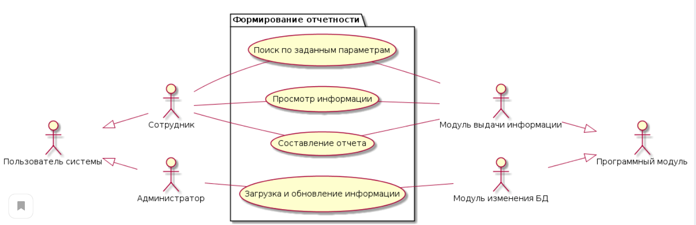

1. Идентификатор прецендента
Сформировать отчетность
2.Название прецендента
Описание прецедента формирования отчетности
3. Контекст
Дисциплина Проектирование информационных систем
4. Участники (actors) и цели (goals)
Участники |
Действия |
Ожидаемый результат |
Сотрудник |
Основной |
Определение необходимой отчетности и назначение отвественного |
Система |
Инструмент |
Хранит данные о сотрудниках, дисциплинах, учениках |
5.Предусловия (pre-conditions)
6.Постусловия (post-conditions)
7.Основной поток (main flow)
Участник |
Действие |
Ожидаемый результат |
Сотрудник |
Выбирает необходимую отчетность |
Определение необходимой отчетности |
Сотрудник |
Создает макет для построения отчетов |
Готовые макеты для построения отчетов |
8.UML-диаграмма (exceptions)
